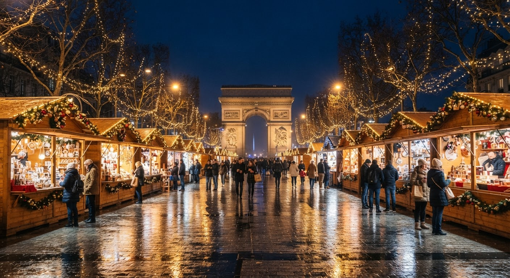
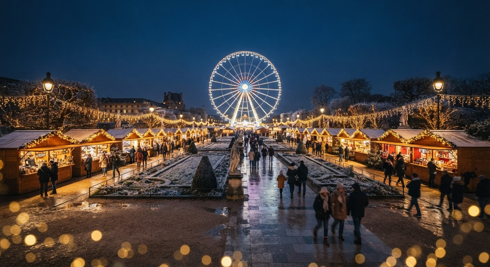
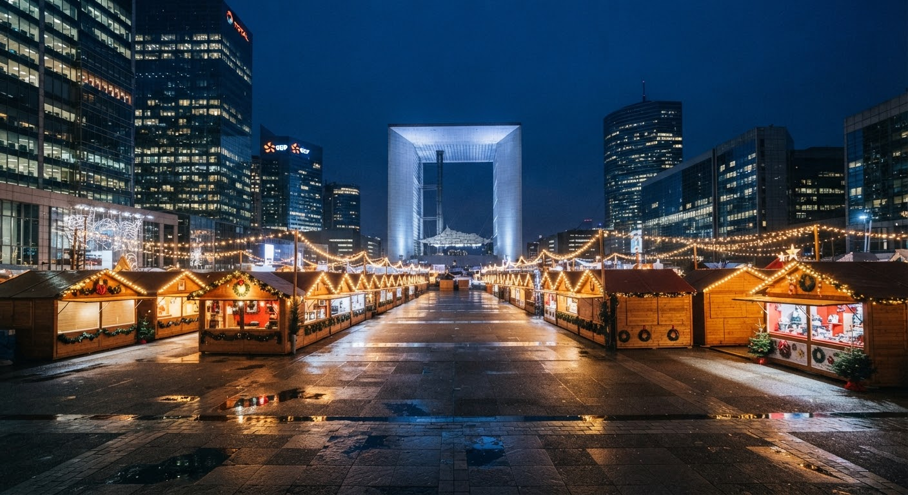
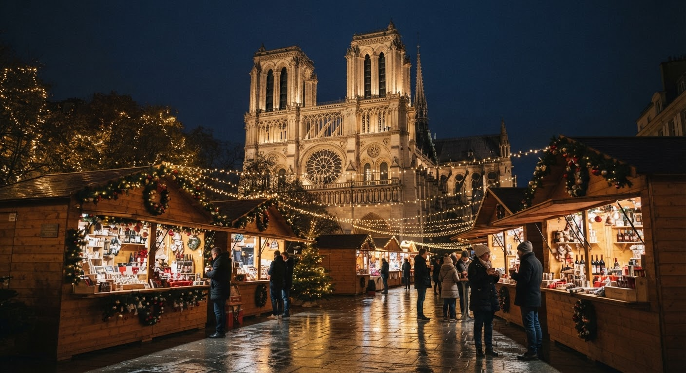
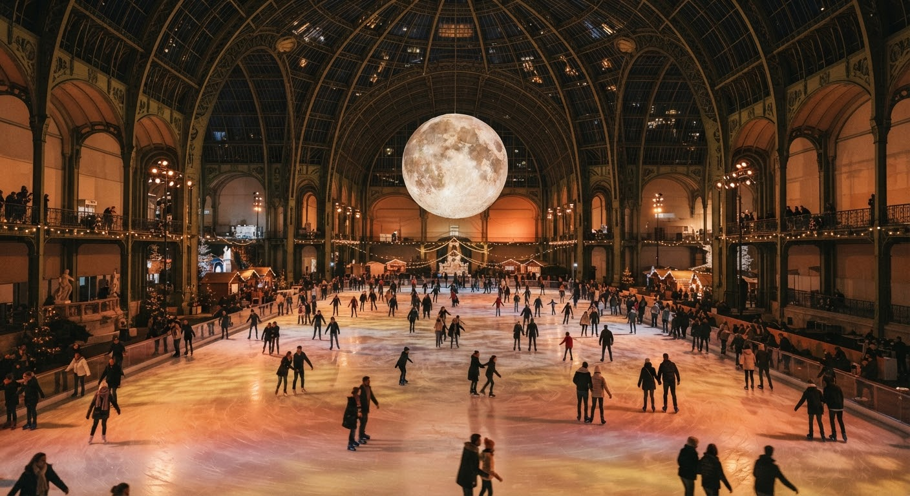
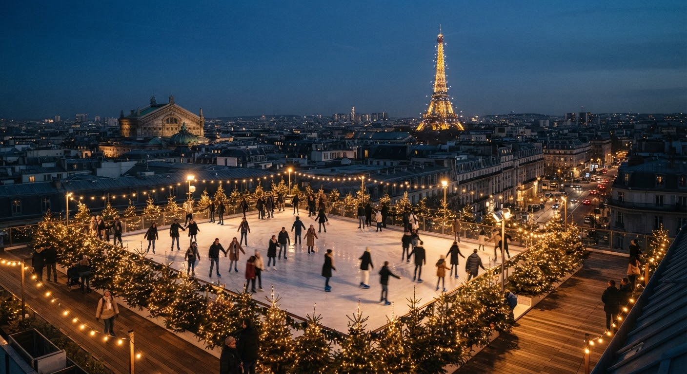
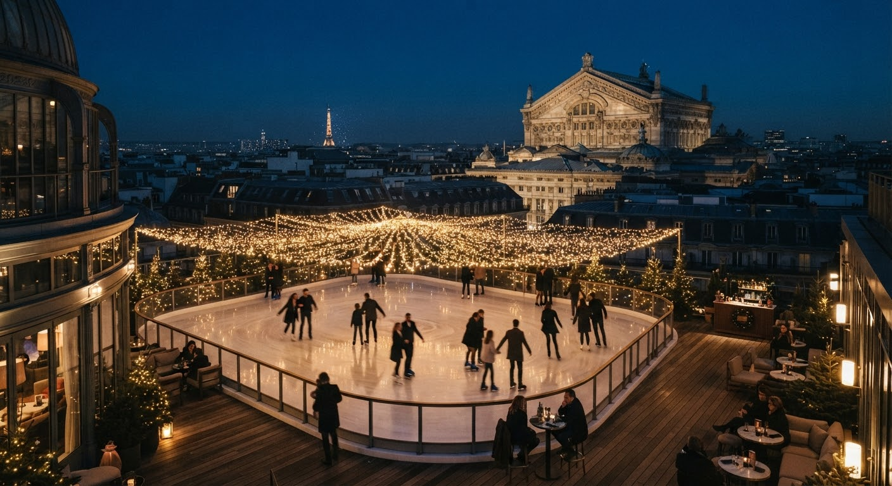

Mercados de Natal, pistas de gelo e as luzes mais bonitas do ano. Tudo o que acontece na cidade só nesta época, reunido num só lugar.
Dezembro transforma Paris. A cidade ganha mercadinhos de madeira, pistas de gelo ao ar livre e sob o céu de vidro do Grand Palais, e vitrines que parecem contos de fadas, tudo isso ao lado dos pontos turísticos que você já conhece.
Este guia reúne o que acontece só nesta época do ano, com horários, o que você vai encontrar em cada lugar, como chegar de transporte público e um diferencial de cada ponto. Guarde o link e vá conferindo durante a viagem.
Os cinco mercadinhos mais marcantes da temporada, cada um com uma personalidade bem diferente.

Arc de Triomphe · Champs-ÉlyséesO retorno mais comentado da temporada. Depois de quase uma década fora da avenida, o mercado volta com chalés de madeira, num formato novo focado em artesanato e produtos de qualidade. O programa completo de expositores ainda está sendo confirmado pela organização. Perto da Place Clémenceau, dentro da área do mercado, fica também uma pista de gelo pequena, um bom extra para quem já está passeando por ali com crianças.

Grande roue · Jardin des TuileriesO clássico "parque de diversões gourmet" de Paris: cerca de 80 chalés de madeira, roda-gigante de 50 metros, carrossel, tobogã gigante e uma pequena pista de gelo, tudo dentro do jardim mais central da cidade.

Grande Arche · La DéfenseO maior mercado de Natal da região, com mais de 300 chalés espalhados entre os prédios de vidro do bairro financeiro. Uma mistura curiosa de arranha-céus e vilarejo natalino que não existe em nenhum outro lugar de Paris.

Rosácea · Notre-DamePequeno e charmoso, bem de frente para a Catedral de Notre-Dame, com artesanato francês, degustações de especialidades regionais e demonstrações de ofícios tradicionais. Sem carrossel nem pista de gelo, é o mais calmo da lista.
De coberturas de museu a rooftops com vista pra Torre Eiffel, Paris vira uma cidade sobre lâminas em dezembro.

Nef de vidro · Grand Palais2.700 m² de gelo sob a nave de vidro do Grand Palais, com uma lua suspensa de 16 metros. Em 2026, a edição tem tema Harry Potter, com loja licenciada e restaurante de altitude para raclette com vista da pista.

Rooftop · Galeries LafayetteUma pista pequena no topo do prédio histórico, em parceria com a Courchevel, com vista panorâmica dos telhados de Paris e, em dias claros, da Torre Eiffel ao fundo.

7º andar · Printemps HaussmannOutra pista suspensa, no sétimo andar da loja de departamento vizinha, pequena e exclusiva (só 15 patinadores por vez), também com vista panorâmica da cidade e do Opéra Garnier.
Não custa nada e é puro espetáculo. Ótimo programa de fim de tarde entre um passeio e outro.
Os plátanos ao longo de toda a avenida se iluminam todas as noites, das 17h à meia-noite, com um brilho de cinco minutos no início de cada hora e um pequeno espetáculo de luzes a cada quinze minutos. As luzes mudam de cor e se movem ao longo da avenida, um dos efeitos mais bonitos da temporada.
A árvore gigante sob a cúpula centenária é o grande cartão-postal do Natal parisiense, ao lado das vitrines animadas na fachada do boulevard Haussmann. Entrada livre.
Vitrines com tema novo todos os anos, bem na esquina das Galeries Lafayette. Vale fazer as duas no mesmo passeio a pé.
A avenida mais elegante de Paris ganha árvores decoradas inteiras com pisca-pisca em tom dourado, criando um clima chique e intimista, mais calmo que os Champs-Élysées. No número 30, a fachada histórica da Dior entra no clima natalino com uma decoração iluminada especial, com direito a efeitos de luz, que muda de tema a cada ano. Vale incluir numa caminhada noturna saindo do Trocadéro ou da Place de l'Alma.
No frio e com os dias mais curtos, vale priorizar metrô e RER para encadear os passeios sem perder tempo na rua.
Dezembro em Paris costuma ficar entre 2°C e 8°C, com dias curtos. O sol se põe por volta das 17h.